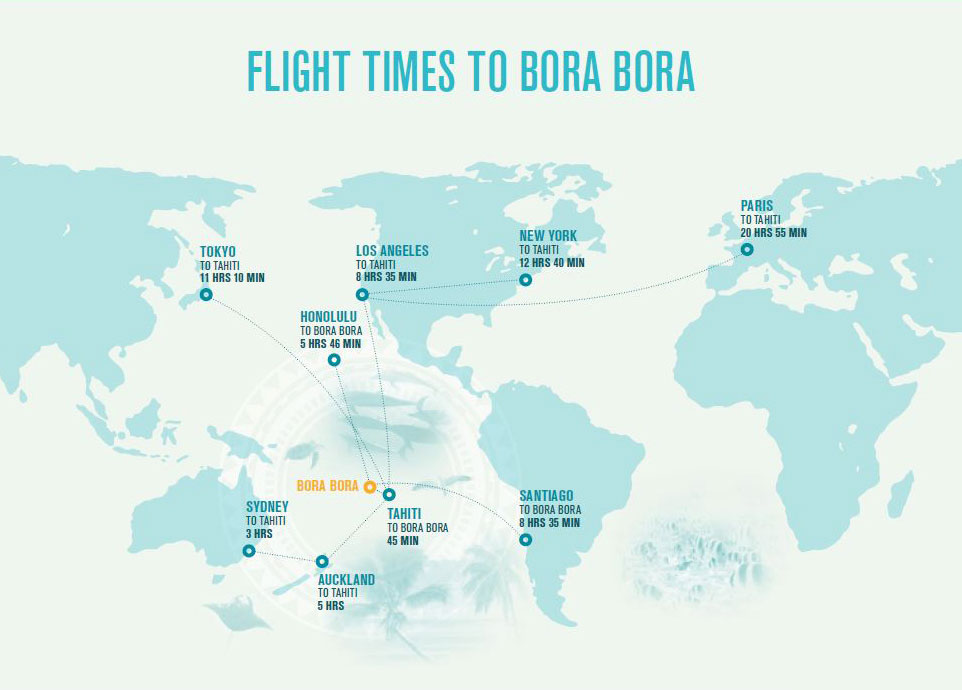
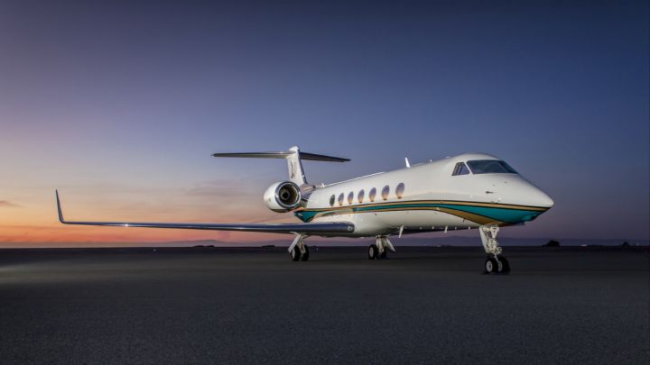

Flight
Guests of Beautiful Bora Bora Bungalows first fly to Faa'a International Airport (PPT) in Papeete, Tahiti, the only international airport serving French Polynesia. From Papeete, it is a short 45-minute flight to Bora Bora, where we will meet you upon arrival and escort you to the Resort.
Destination
In partnership with Aircraft Logix, this new Beautiful Bora Bora Bungalows service provides non-stop flights from the executive terminal of Los Angeles’ Van Nuys Airport (VNY) – bypassing the hassles of commercial air travel, and boarding directly onto a Gulfstream G550 private charter. Guests will relax in a truly luxurious flight experience and enjoy first-class dining and cocktails as they are flown directly to Bora Bora. Upon arrival, guests will be escorted by yacht to the breathtaking Beautiful Bora Bora Bungalows. Guests have the option of an exclusive private charter (one party of up to 12 guests) year-round, or a shared private charter (with other Four Seasons guests) over select dates throughout 2017.
This VIP experience starts at USD 27,500 per person based on double occupancy, for an average seven-night stay (approximately USD 4,000 per night). This includes complimentary invitation-only access to our shared private chartered aircraft and accommodations in an overwater bungalow suite.
Exclusive charter flights start at USD 160,000, plus accommodations.